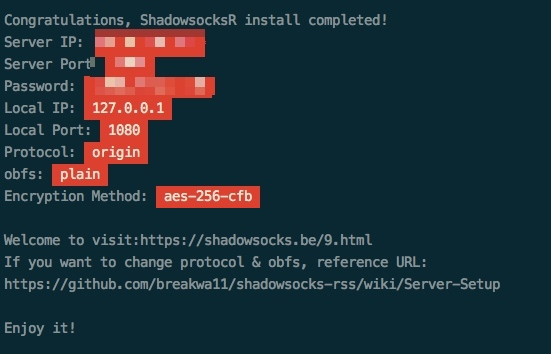

SSR一键安装包
下载脚本
wget -N --no-check-certificate https://raw.githubusercontent.com/91yun/shadowsocks_install/master/shadowsocksR.sh && bash shadowsocksR.sh
安装完成后

该脚本已经自动将 Shadowsocks 加入开机自启，安装完成 Shadowsocks 就已经启动了。
Shadowsocks配置文件
/etc/shadowsocks.json
其他命令
./shadowsocksR.sh uninstall
/etc/init.d/shadowsocks start
/etc/init.d/shadowsocks stop
/etc/init.d/shadowsocks restart
/etc/init.d/shadowsocks status
为Shadowsocks添加多个端口和密码
如果你想将 Shadowsocks 账号出售给其他人,或者希望将账号共享给朋友,又不想和他使用同一个密码,那么你就需要给 Shadowsocks添加多个端口和密码,具体还是需要修改 Shadowsocks的配置文件:
默认的单个端口的配置文件如下:
{
"server":"0.0.0.0",
"server_ipv6":"::",
"server_port":8001,
"local_address":"127.0.0.1",
"local_port":1080,
"password":"123456",
"timeout":120,
"method":"chacha20",
"protocol":"origin",
"protocol_param":"",
"obfs":"plain",
"obfs_param":"",
"redirect":"",
"dns_ipv6":false,
"fast_open":false,
"workers":1
}
你需要将其中的server_port和password删掉,并且添加port_password的字段:
"port_password": {
"8001": {
"protocol": "auth_sha1_v2_compatible",
"password": "12345",
"obfs": "tls1.2_ticket_auth_compatible",
"obfs_param": ""
},
"8002":"password2",
"8003":"password3"
},
修改好之后，重启 Shadowsocks
Shadowsocks 算是安装好了，不过速度很不理想，我们可以使用 ServerSpeeder 对它进行加速。